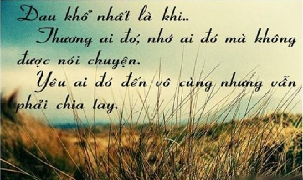
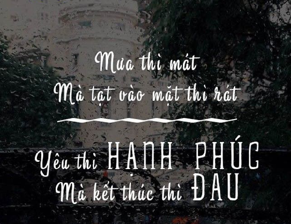
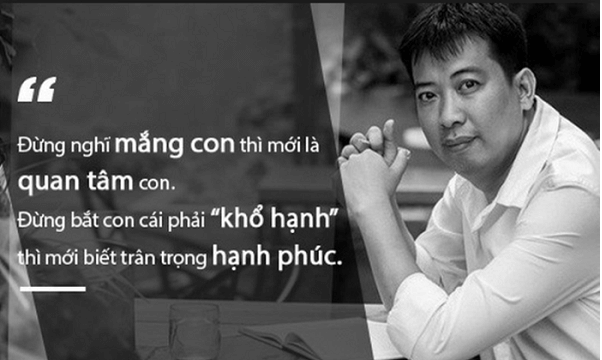
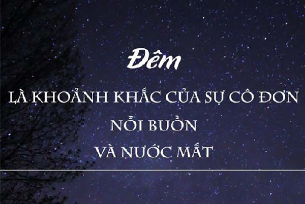
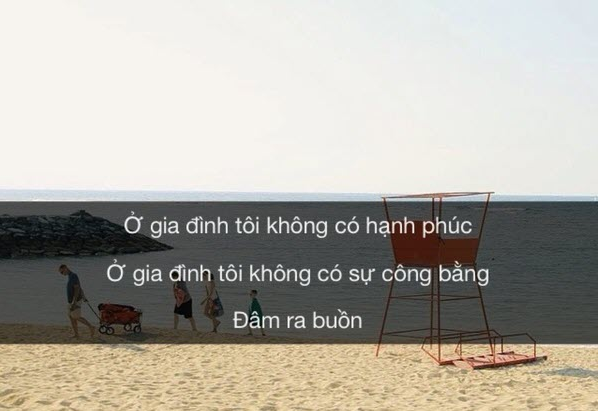
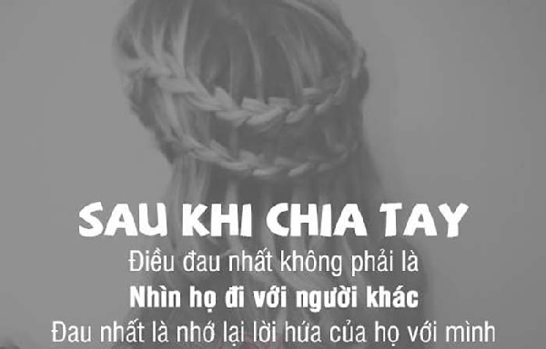
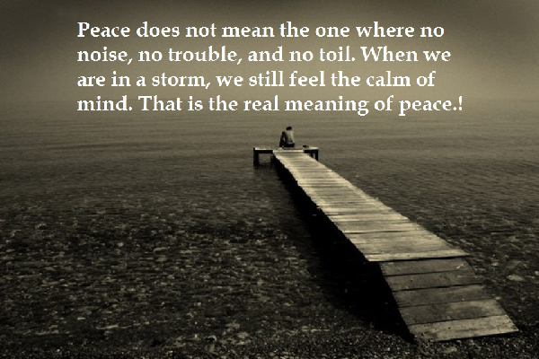
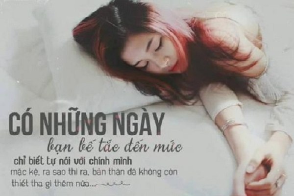

999+ STT buồn, CAP tâm trạng, TUS ngắn cực HAY mọi lứa tuổi

Ty Nguyen
CEO ❤️ AhaChat. Love babies & chatbot.
Cho dù bạn đang ở lứa tuổi nào thì cũng không thể tránh khỏi khi gặp phải những lúc mệt mỏi phiền muộn trong cuộc sống khiến tâm trạng của bạn buồn vui lẫn lộn. Và để cho mọi người hiểu được tâm trạng của bạn cũng như giúp bạn vơi đi những nỗi buồn, những phiền muộn khó có thể chia sẻ được với những người thân hay bạn bè thì những dòng stt buồn, những tus mang đầy tâm trạng sẽ giúp bạn. Hơn nữa, khi đọc những dòng stt buồn, những cap tâm trạng, tus ngắn cực hay còn giúp bạn lấy lại được tinh thần, cảm nhận được sâu sắc về tình yêu, cuộc sống.
Xem thêm:
- 9999+ câu STT hay, CAP - TUS hay bất hủ mọi thời đại được SHARE nhiều nhất
- 999+ STT, CAP, TUS thả thính ngắn siêu HAY, ngọt ngào, dễ thương
- Những câu nói hay về tình yêu: STT, CAP, TUS đủ thể loại buồn vui
- 999+ STT vui, CAP hài hước, thả thính vui nhộn về tình yêu, cuộc sống
- 999+ STT hay chất như quả đất, CAP ngầu về tình yêu & cuộc sống
- Những câu nói hay về tình bạn: STT, CAP, TUS buồn vui đủ thể loại
- 9999+ Tên nick Facebook hay, ngầu, đẹp, chất cho Nam & Nữ
- Full 1001+ Icon Facebook 2020 mới nhất & Các biểu biểu tượng FB HOT
STT tâm trạng buồn về tình yêu đôi lứa

Chắc hẳn khi yêu, bạn đều đã trải qua đủ mọi cung bậc cảm xúc trong tình yêu, vui có, buồn có, đắng cay có, tủi nhục có. Và dù bạn gặp phải tâm trạng nào thì cũng đều muốn chia sẻ lên mạng xã hội thông qua stt. Dưới đây là một số stt thể hiện tâm trạng buồn của các cặp đôi mà bạn có thể chọn lựa:
“Sau khi chia tay. Thứ vỡ vụn nhất có lẽ là Niềm Tin”
“Thà mỉm cười và nói rằng..mọi thứ điều ổn cả..! Còn dễ dàng hơn là..Giải thích cho ai đó chuyện gì đã xảy ra! Thà im lặng..Giữ lấy niềm đau.. Còn hơn nói với nhau để rồi không lau được nước mắt”
“Đã có lúc em nhớ lắm nhưng vẫn giả vờ không có gì, muốn gặp lắm nhưng vẫn cố gắng kiềm chế. Em thích lắm nhưng vẫn nói chỉ là bạn bè thôi. Muốn bày tỏ tình cảm lắm nhưng lại sợ không được đáp trả.”
“Lúc trước, tôi đợi...người tôi yêu..Bây giờ... tôi đợi cho trái tim tôi..hết yêu người..”
“Bất cứ ai nói rằng thà yêu và đánh mất tình yêu còn hơn chưa từng yêu lấy một lần, hẳn chưa từng thấy trái tim mình tan vỡ.”
“Nếu nói tôi hoài niệm anh ấy, chi bằng nói tôi hoài niệm khoảng thời gian ngày đó của chính mình, hoài niệm những chuyện tôi vì anh ấy mà làm, những chuyện tôi vì anh ấy mà có được, vì anh ấy mà mất đi. Có lẽ không phải tôi không quên được anh ấy, chỉ là tôi không có cách nào quên được hình ảnh một tôi đầy nhiệt huyết, đầy bất chấp khi yêu anh ấy của những năm tháng đó mà thôi.”
“Nhiều lúc Em tỏ ra vô tình...Rồi nhận ra mình đang khóc...! Nhiều lúc Em tỏ ra thật nhẫn tâm... Để rồi nhận ra...Mình đang đau...! Nhiều lúc Em tỏ ra thật cứng cỏi... Để rồi nhận ra... Mình thật yếu đuối”
“Có những lời chia tay không phải là vì hết yêu.. Mà đơn giản chỉ vì không bên nhau được nữa..”
“Sự phản bội mà ta nhận được hôm nay không phải do ta ngu ngốc hay không tốt. Mà là vì...ta đã quá tốt với những thứ chẳng xứng đáng với mình”
“Người ta khóc thường không phải vì họ yếu đuối mà bởi vì họ không thể mạnh mẽ trong thời gian quá dài”
“Thật đáng ngạc nhiên rằng ai đó có thể làm trái tim bạn tan vỡ, ấy vậy mà bạn vẫn yêu người ấy với từng mảnh nhỏ.”
“Khi người ta không còn yêu thì họ sẽ sẵn sàng gạt bỏ bạn ra ngoài trái tim không thương tiếc”
”Có một người, dạy bạn thế nào là yêu nhưng không yêu bạn. Có một người, trao cho bạn hàng ngàn nỗi nhớ nhưng chẳng bao giờ nhớ về bạn.”
“Tình yêu giống như hai người cùng kéo một sợi dây chun. Nếu một người buông, người còn níu giữ sẽ đau đớn.”
“Người yêu cũ có người yêu mới. Đau, đau một nỗi đau mơ hồ, cứ tưởng sau chừng ấy thời gian nó có thể bình tĩnh lại, hờ hững với những thứ có liên quan. Vì sao chỉ một tấm hình mà lại nhói tim đến vậy”
“Thà làm người dưng đi qua nhau còn hơn đi bên nhau một cách không chân thành”
“Và tôi sợ hãi những lúc như thế này... khi có thể nói mọi điều, và chẳng còn gì để nói, và chuyện đó khiến tôi buồn bã.”
“Nhiều người nói, yêu xa là khổ, ai chấp nhận yêu xa là khờ, cố gắng vì yêu xa là vô ích. Thỉnh thoảng trên phố bắt gặp cặp đôi đi xát bên nhau, cùng cười, cùng nói, cùng nắm tay bỗng nhiên cảm thấy lòng mình lạc lõng vì nhớ tới ai kia đến đau lòng”
“Đôi khi họ nhắc tới tên anh, và rồi ai đó hỏi em liệu em biết anh không. Em quay đi, nhớ về tất cả khoảng thời gian chúng ta ở bên nhau, chia sẻ tiếng cười, nước mắt, những câu đùa và vô số nữa, và rồi, anh ra đi không lời giải thích. Em nhìn về nơi họ đang chờ đợi câu trả lời của em và em nói khẽ, 'Đã từng có lúc... tôi nghĩ mình biết.'"
“Hãy hứa với em, đó là tất cả những gì em muốn. Hãy nói với em rằng em đã thay đổi anh theo một cách nào đó. Hãy nói với em rằng em có ảnh hưởng lên cuộc đời anh. Hãy hứa với em rằng anh sẽ luôn nhớ về em. Mất anh đã đủ khó khăn, nhưng em không muốn sống và nghĩ rằng em chẳng có chút ý nghĩa nào đối với anh.”
“Em nhớ anh khi điều gì đó thật sự tốt đẹp xảy ra, bởi anh là người em muốn chia sẻ. Em nhớ anh khi điều gì đó làm em sầu não, bởi anh là người rất hiểu em. Em nhớ anh khi em cười và khóc, bởi em biết anh có thể giúp em nhân lên nụ cười vào lau đi nước mắt. Lúc nào em cũng nhớ anh, nhưng em nhớ anh nhất khi em thao thức trong đêm, nghĩ về tất cả những khoảng thời gian tuyệt vời mà chúng ta ở bên nhau.”
“Bạn sẽ phải tìm đến ai khi người duy nhất có thể khiến bạn ngừng rơi lệ lại là người khiến bạn khóc?”
“Ai cũng nói, "Hãy nghe theo trái tim đi." Tôi làm thế, nó vỡ rồi.”
"Đau nhất là khi bạn nhận ra sự tồn tại của bạn đổi với ai đó là có cũng được mà không cũng chẳng sao”
“Thà yêu người Bình Thường...để cảm thấy mình đặc biệt!!! Còn hơn là... Yêu một người quá đặc biệt...để rồi bị cho là...tầm thường”
“Dù có yêu thương thật lòng. Mà cứ đi lòng vòng. Rồi sẽ lạc mất nhau”
“Hãy tập ăn cay đi để rồi quen với đắng cay. Cuộc đời đâu phẳng lặng. Sao cứ thích ngọt ngào. Hãy tập ăn chua đi để rồi quen với dần với chát. Cuộc đời đâu có đầy đủ sao cứ thích đậm đà”
“Hãy chọn một kết thúc buồn...thay vì chọn một nỗi buồn không bao giờ có kết thúc..”
“Sợ nhất là khi ta lấy hết dũng cảm để nhắn tin cho một người, Để rồi trả lại là sự im lặng lạnh người hay câu nói vô tình: ” Đừng làm phiền tôi nữa”.
“Đời bạc bẽo..hay..tình người lạnh lẽo..Nhận được gì.. Ngoài ba chữ “ mất lòng tin..”
“Khi mà mọi sự xa cách đếm được vẫn chỉ là vấn đề về thời gian và địa lý, chỉ sự cách xa lúc đó bằng kỷ niệm mới là khoảng không vĩnh viễn khó lấp đầy… thì chia tay, dù đau, nhưng chưa bao giờ là điều buồn nhất”
"Một vài trái tim được hàn gắn, một vài trái tim nát tan, mặc dù chẳng bao giờ có ai muốn vậy, bởi tình yêu luôn được thề thốt đầu bạc răng long. Tôi đã khóc, và cầu nguyện, và van xin, chỉ mong tình yêu bền vững. Hy vọng là tất cả những gì tôi cần, và đau đớn là tất cả những gì tôi tìm thấy.”
“Anh quay lại và nhìn thẳng vào tôi và không nói gì cả, thậm chí dù chỉ một lời chào. Cứ như thể những tháng ngày chúng tôi ở bên nhau, những ngày tháng tôi yêu anh chẳng hề quan trọng, như thể chúng chưa bao giờ xảy ra.”
“Yêu một ai đó quá nhiều thì dù biết là rất đau nhưng vẫn mãi không thể buông tay”
“Một ngày anh sẽ yêu em như em yêu anh, một ngày anh sẽ nghĩ về em như em nghĩ về anh, một ngày anh sẽ khóc vì em như em khóc vì anh, một ngày anh sẽ muốn em... nhưng em sẽ không cần anh nữa.”
“Sau bao nhiêu yêu thương thì cuối cùng ta vẫn là người xa lạ”
“Nhiều lúc em sợ chuyện tình cảm, sợ những tan vỡ lại đến, lại đổ lên đầu em. Không phải em không cố gắng, mà là những cố gắng của em dường như chỉ được đáp lại bằng những thất vọng, đau thương. Em phải làm sao?
“Phải có cái gì đó mất đi con người ta mới nhận ra những ngày bình thường là hạnh phúc”
Có lúc hai người cũng yếu lòng, muốn đi xa hơn để thành người yêu, mà sợ cảm giác yêu rồi thành cũ, lúc đó mất người yêu mà còn mất luôn bạn.
Hãy nhớ những gì đáng nhớ Quên đi những gì cần quên Thay đổi những gì có thể...Và ... hãy chấp nhận những gì đã mất ...
Nếu thiếu tôn trọng, tình yêu thương không thể tiến xa hơn được.
Cảm giác đau xót nhất không phải là ghen mà là không biết lấy quyền gì để ghen.
Tình yêu là thứ duy nhất chúng ta có thể mang theo mình khi ra đi, và nó khiến kết thúc trở thành dễ dàng.
Mối tình yêu dù có đẹp đến đâu cũng chỉ là mối tình không trọn vẹn.
Yêu nhau thì không khó nhưng để sống cùng tình yêu thì chẳng dễ dàng tí nào.
Cần cám ơn những người đã có mặt trong cuộc đời bạn. Dù tốt hay xấu, dù trong quá khứ hay hiện tại, tất cả họ đề giúp bạn trở thành con người như hiện nay.
Tình yêu là danh dự, đã mất đi một lần thì không bao giờ có thể trở lại.
Yêu một người thì phải tin tưởng họ nhưng chia tay một người phải tin tưởng bản thân.
Có những lời chia tay không phải vì hết yêu mà đơn giản chỉ là không bên nhau được nữa.
Đừng bao giờ ảo tưởng rằng bạn có thể giữ được người đàn ông mình yêu bên cạnh mình suốt cuộc đời.
Nếu bạn muốn biết nỗi cô đơn là gì, hãy yêu một người không yêu mình
Trên con đường của bạn có thể sẽ có nhiều người nói yêu bạn đấy, nhưng khi vấp ngã sẽ chỉ có một người yêu bạn thật lòng đỡ bạn dậy mà thôi
Chúng ta vẫn luôn chạy theo vòng tròn quẩn quanh: tìm kiếm nhau, tìm thấy nhau, tìm hiểu nhau và rốt cuộc lại chẳng hiểu gì về nhau.
Đừng bao giờ ảo tưởng rằng bạn có thể giữ được người đàn ông mình yêu bên cạnh mình suốt cuộc đời.
Đừng tốn thời gian bên người đàn ông không chịu thay đổi bất cứ điều gì vì bạn.
Trên đời này, tình yêu là thứ không thể miễn cưỡng.
Tình yêu không cần phải hoàn hảo, nó chỉ cần chân thật.
Tình yêu nếu chỉ dựa vào cố gắng từ một phía đôi khi sẽ không đến được đích.
CAP ngắn tâm trạng buồn về mưa

Nếu bạn đang tìm kiếm những Cap ngắn tâm trạng buồn về mưa thì không thể bỏ qua những gợi ý dưới đây:
Mưa bao giờ cũng thế, cũng cô đọng trong em từng nỗi nhớ chơi vơi và nhớ nhất vẫn là anh.
Mưa bao giờ cũng làm cho mọi thứ trở nên nhạt nhòa, còn nỗi nhớ cứ dài rộng ra
Mưa xuống nắng lên, gió thổi mây sẽ tan, rồi trăng cũng sẽ tròn đầy.
Lúc nhỏ tắm mưa là điều thật tuyệt vời, cứ mong chờ đến những cơn mưa nặng hạt mà nhảy nhót. Lớn lên mới biết đi dưới mưa thật cô đơn, mưa rơi trên mi mà không phân biệt đâu được là nước mắt đâu là mưa.
Giá mà mưa cứ rơi như thế này mãi, để em được ngồi đây mãi và suy nghĩ những chuyện vẩn vơ để thôi nghĩ đến anh một chút, để nhẹ lòng dù chỉ một chút thôi.
“Mưa thì mát mà tạt vào mặt thì rất Yêu thì hạnh phúc mà kết thúc thì đau"
“Nỗi buồn trót dại đi ngược chiều, cứ thế bạt đi trong mưa, trong gió Vậy cũng tốt, Bão rồi cũng sẽ tan mà thôi"
Em nhớ anh tha thiết khi trời đổ nắng, và nhớ thật nhiều khi mưa cứ mãi rơi rơi như gợi nỗi buồn không tên trong chiều vắng.
“Từng giọt mưa cứ thế làm nhòe đi mắt ai Có lẽ đêm nay mưa cứ rơi cho trái tim quên đi ánh mắt buồn .."
Mưa hối hả xóa đi nắng mùa hạ Em hối hả xóa tất cả về anh
Mưa đến chậm rãi nhẹ buông từng giọt chứa những nỗi niềm vấn vương. Bật list nhạc du dương, nhìn mưa rơi khẽ khàng bên khung cửa, thấy chới với trong sâu thẳm tâm hồn
Mưa bao giờ cũng làm cho mọi thứ trở lên nhạt nhòa, còn nỗi nhớ cứ dài rộng ra
“Tôi thích mưa … vì đi dưới mưa chẳng ai biết nước mắt tôi rơi
Tôi thích giá lạnh … vì sống trong đó chẳng ai biết bờ vai tôi run lên vì cô đơn
Tôi thích bóng đêm… vì ẩn trong nó tôi không phải cố gắng cười gượng gạo"
Tự dưng em thèm một cơn mưa thật to, bởi thành phố lớn như vậy em có thể đứng giữa nó khóc hết nỗi buồn, mà không sợ gặp phải người, không sợ người ta bảo mình yếu đuối…Chúng ta kì lạ nhỉ yếu đuối trước những sợi nước mỏng manh….
“Tình yêu và hạnh phúc … giống như những hạt mưa vậy Trông thấy nhiều … nhưng đưa tay giữ lấy chúng thật khó"
“Tôi yêu mưa … Vì mưa là một vỏ bọc cảm xúc thật hoàn hảo Tôi yêu mưa … Vì mưa cuốn trôi đi bao kỷ niệm dĩ vãng"
Ngày mà mình đau lòng nhất thì cũng là lúc trời đổ cơn mưa
Mưa hôm nay nghe lạnh lùng hơn hôm qua và có gì đó ảm đạm hơn mấy hôm trước.
Cơn mưa rào mùa hạ cuốn trôi bao kỷ niệm dĩ vãng
Tình yêu và hạnh phúc giống như những hạt mưa, trông thấy nhiều nhưng giữ lấy chúng thật khó.
“Mưa rồi mưa, mưa hát ru đêm buồn Con phố vắng tênh đón anh về trong mưa"
Một ngày mưa và anh khuất xa nơi em, hình bóng cũ phai dần. Hãy cho em biết phải mất bao lâu em mới quên được anh
Trời mưa rồi…thích lấy xe chạy lòng vòng thành phố, ghé vào quán cafe nào có thể nhìn ra đường rồi ngồi tận hưởng giây phút này… Tiếc là bài báo cáo sắp phải nộp, không còn thời gian để ngồi thẩn thơ được nữa… Hẹn một dịp khác, khi cơn mưa đổ xuống…!!!
“Mưa hối hả xóa đi nắng mùa hạ Em hối hả xóa tất cả về anh"
Nếu hướng dương là người yêu thầm lặng của mặt trời thì tú cầu là tri kỉ của những cơn mưa.
Chỗ em mưa rồi à? Nơi anh ở vẫn chưa. Em quên anh rồi à? Còn anh thì vẫn chưa…
“Rốt cuộc rồi cũng sẽ là mưa sau bao ngày nắng Rốt cuộc rồi em cũng biết sẽ mất người thì lanh và tay người chỉ ấm đôi khi"
Mưa rơi rơi rồi dứt từ từ dù bên ngoài vẫn còn vài giọt khẽ bay bay trong gió chiều nghe tê tái.
“Những giọt mưa cho dù là thưa thớt cũng đã đủ đưa con người ta về với những kỷ niệm xưa
Tuổi thanh xuân giống như một cơn mưa rào. Dù cho bạn từng bị cảm lạnh vì tắm mưa, bạn vẫn muốn được đắm mình trong cơn mưa ấy lần nữa.
Mưa ngồi ở góc quán cafe quen, nghe nhạc không lời, đọc cuốn sách hay … Thế giới tự nhiên như thu nhỏ lại
Con người ta rốt cục là thấy mưa buồn hay thấy mình buồn trong mưa?
Một ngày mưa và anh khuất xa nơi em, hình bóng cũ phai dần. Hãy cho em biết phải mất bao lâu em mới quên được anh
Người ta nói, biết một người từng trải hay không từng trải, chỉ cần nhìn vào đôi mắt người đó. Đôi mắt chính là nơi chứa đựng tất cả những ký ức vui buồn, những tâm sự chất chồng.
Nỗi buồn trót dại đi ngược chiều, cứ thế bạt đi trong mưa, trong gió Vậy cũng tốt, Bão rồi cũng sẽ tan mà thôi
Một chiều mưa lạnh, trông bóng ai ngoài mưa mà nhớ người
Chạy thật nhanh vào cơn mưa ấy, để em quên được cảm giác này. Chỉ giọt mưa hiểu em ra sao, chỉ mưa biết lòng đau thế nào.
Thành phố hôm nay lại mưa, ở nơi nào đó em có cảm thấy lạnh hay không?
“Cơn mưa chiều nay sao vô tình đến thế Ướt lối em về nước mắt khẽ tuôn rơi”
Mưa nghe tê tái, mưa nghe lạnh lòng những kẻ chờ mong.
TUS tâm trạng buồn về cuộc sống gia đình

Gia đình chính là điều thiêng liêng nhất của mỗi chúng ta. Tuy nhiên, có những lúc chúng ta rơi vào tình trạng lạc lõng ngay chính trong ngôi nhà của mình. Những stt buồn về cuộc sống gia đình được gợi ý dưới đây giúp bạn trải lòng nhanh nhất cũng như có thêm động lực để vượt qua và thêm yêu gia đình mình hơn nhé.
Chắc chung quy đâu đó củng vì nghèo, không có tiền cuộc sống bí bách ngột ngạt rồi gia đình lục đục lâu ngày bất hòa, cuộc sống mấy ai vượt qua được sự nghèo khó để sống vui vẻ cả đời.
Hãy trân trọng những gì mà bạn và gia đình bạn đang có, tức là chúng ta đang xây dựng một sự gắn kết cho một tương lai tươi đẹp hơn, với đủ yêu thương trong một mái ấm.
Gia đình là nơi có cha và mẹ, có những thứ tình yêu mà bạn không cần phải đánh đổi một thứ gì đó để có được, là nơi tìm về những khi gục ngã những người thân yêu sẽ nâng chúng ta dậy, sẽ giúp chúng ta đứng lên.
Rời bỏ khỏi gia đình mình đang sống vì cho rằng đây là cách để bạn phá vỡ một gia đình tan vỡ từ người cha người mẹ.
Xót xa cho 2 từ “mẹ ghẻ”, “con chồng” 🙁 Phải chăng chính người đời đã khiến con người ta chẳng thể sống khác đi được…
Tôi thực sự không hiểu nổi rốt cục bản thân mình tại sao phải tồn tại, thế giới này có cần mình ko ? Làm sao có thể sống khi lúc nào cũng cảm thấy bế tắc dồn dập. Đáng nhẽ ra phải viết thứ gì đó vui vẻ, để cố làm mình vui. Nhưng càng cố thì càng ko được. Việc cố gắng để gắng gượng, cố gắng để chịu đựng thực chất chỉ làm bản thân cạn kiệt năng lượng thôi!!!!
Gia đình không phải là việc bạn mang trong mình dòng máu của ai mà nó nằm ở chỗ bạn yêu thương ai, chia sẻ và quan tâm đến ai.
Mọi người có thể đi bất cứ nơi đâu và đến nơi nào cần đến, nhưng chỉ có một gia đình để tìm về, là những lúc mà cuộc sống quay lưng với bạn, là nơi tình yêu luôn đông đầy và chờ ta trỡ về. Gia đình chính là nơi ta tìm về khi mệt nhoài trên con đường đời đầy rẫy chông gai.
Rất nhiều người thức đêm không phải vì mất ngủ, cũng không phải vì phải làm một công việc nào đó. Có lẽ là vì sự mệt mỏi tinh thần đã ngăn họ nghỉ ngơi
Dù cuộc sống có bộn bề và tấp nập đến đâu, dù người có lớn bao nhiêu và đi đâu chăng nữa thì cũng cần một điểm tựa, một nơi để tìm về, một mái nhà thân thương.
Không một gia đình nào là hoàn hảo… vẫn có cãi vã, vẫn có chiến tranh, thậm chí là sự lạnh lùng trong một thời gian rất dài, nhưng cho đến cuối cùng, gia đình vẫn là gia đình… nơi tình yêu luôn luôn hiện hữu. Hãy lấp đầy một ngôi nhà bằng tình yêu, nó sẽ trở thành gia đình.
Cứ nói phải phạm tội gì đó tày đình mới bỏ, nhưng chính những điều tưởng như nhỏ này lại tạo thành khoảng trống rất lớn trong hôn nhân!
Khi đêm về, con người ta lại tự dày vò mình bằng hàng nghìn câu hỏi, nhưng nỗi đau lại càng chất chồng và khóc chính là cách giải tỏa tốt nhất có thể làm ngay lúc này…
Nếu bạn đã từng sống trong một gia đình hạnh phúc, nhưng đến một ngày tình cảm gia đình không còn để vun đắp mà bị rạn nứt thì đừng buông xuôi bạn nhé, hãy cố hàn gắn và xây dựng lại gia đình thay vì trách than nhé. Mọi nỗ lực sẽ có kết quả.
Cứ đêm đến. Không hiểu sao thấy đời mình, cuộc sống của mình buồn đến thế. Ngồi trong 1 góc u quạnh và nghĩ về những chuyện đã xảy ra với gia đình, bạn bè và tình yêu mới thấy bản thân có quá nhiều những khiếm khuyết.
Cách duy nhất để tiến lên hòa bình và hạnh phúc trong thế giới này là về nhà và không có gì ngoài tình yêu với gia đình của bạn.
Mỗi ngày trôi qua của cuộc đời này thật tẻ nhạt. Đôi khi, tôi dường như quên mất ý nghĩa của bản thân mình, những mong muốn, những cảm xúc mờ nhạt.
Trong một gia đình trách nhiệm của mỗi thành viên là trân trọng, vun đấm là sự quan tâm,…sẽ là liều thuốc kỳ diệu để giữ mái ấm gia đình và tạo nên một tình cảm thiêng liêng.
Một gia đình hạnh phúc chưa chắc nằm ở chỗ ai ai cũng phải cười vui. Mà đối với tôi, một gia đình hạnh phúc trước hết phải luôn mạnh khỏe, hiểu biết và thông cảm lẫn nhau, có kế hoạch để kinh tế gia đình đủ sống…
Không biết rằng là do bản thân mình quá nhàm chán, hay tất cả mọi thứ diễn ra quanh mình quá vô vị.
Hôn nhân gia đình, bố hay mẹ là hai trái tim khác nhau. Vì thế hai trái tim tan vỡ không thể bên nhau … một trái tim phải được lành lại … để giúp chữa lành cho người khác .
Bạn đừng nhìn thấy một gia đình nào đó hạnh phúc là nghĩ họ không từng trải qua những sức mẽ, sự cãi vã… vì họ đã trải qua rồi cho nên biết cách để xây dựng một tình cảm gia đình tốt hơn.
Một gia đình tan vỡ vẫn tốt hơn một gia đình mà trong đó các thành viên lại không yêu thương nhau.
Đôi lúc, tôi thực sự chỉ muốn được nhắm mắt, ngừng suy nghĩ, bỏ mặc thế giới xung quanh, và cũng mong chờ thế giới cũng đối với tôi y như vậy.
Bất kỳ vấn đề nào, dù lớn hay nhỏ, trong một gia đình, dường như bắt đầu với sự không thấu hiểu nhau. Ai đó không lắng nghe.
Không có một gia đình nào là hoàn hảo cả…vẫn có sự cãi vã, vẫn có chiến tranh, thậm chí là sự lạnh lùng trong một thời gian rất dài, nhưng suy cho cùng, gia đình vẫn là gia đình và không có sự chia cắt nào làm tan rã một mái ấm yêu thương đó.
Trong chúng ta đôi khi sống chỉ để lo nghĩ đến bản thân mà không hề quan tâm đến người khác, và luôn trách mốc cuộc sống gia đình quá chán nản mà quên rằng luôn có những con người hy sinh thầm lặng để giúp bạn có một cuộc sống gia đình tốt nhất.
Bước qua đau thương ta càng trở lên cứng cỏi, nhưng trong thâm tâm ta mệt mỏi biết nhường nào.
Trong cuộc sống, ai cũng cần ít nhất một điểm tựa, điểm tựa đó là niềm tin, sự kì vọng, mục đích, tình yêu… và một điểm tựa vững chất đó chính là gia đình bạn.
Dù rằng cuộc đời tôi chưa dài, nhưng tôi có cảm giác mình đã sống cô đơn quá lâu rồi, cô đơn đến mức tôi hầu như cảm thấy quen thuộc và thích thú với việc được làm mọi thứ một mình mà không cần đến ai khác.
Ở cuối cuộc đời mình bạn sẽ nhận ra không bao giờ nuối tiết khi không qua một bài thi, hay thắng lời trong một sự tranh cãi…mà cái bạn đáng nuối tiết đó chính là gia đình mình, vì không có thời gian bên cạnh những người yêu thương.
Nếu mệt mỏi quá rồi thì hãy tạm nghỉ ngơi đi cô gái. Đừng lúc nào cũng gồng mình lên chịu đựng tất cả như vậy.
Nếu không có nhà, không có gia đình thì con người ta làm gì có hạnh phúc? Vậy trên thực tế có nhiều người không có nhà, không có gia đình, vậy họ làm sao để hạnh phúc.
Khoảng trống có thể lấp đầu bằng những yêu thương. Nhưng tổn thương thì chẳng có gì bù đắp được.
35.Gia đình là sự nghiệp CUỐI CÙNG. Tất cả mọi sự nghiệp khác đều phục vụ cho 1 mục đích – đó chính là GIA ĐÌNH.
Có rất nhiều việc đối với người khác là rất nhỏ nhặt, nhưng không hiểu sao luôn trở thành những cài dằm đâm sâu vào đầu mình, khiến mình không sao chịu nổi. Những bế tắc, những khó khăn quá nhỏ nhặt mà mọi người xung quanh không thể chạm đến, không thể quan tâm đến cứ hàng ngày, hàng giờ hủy hoại bản thân mình, suy nghĩ của mình.
Khi mệt mỏi, áp lực với hàng đống suy nghĩ linh tinh thì im lặng là cách tốt nhất để tâm hồn được bình yên giữa bộn bề cuộc sống.
Gia Đình là một nơi chứa đựng những tình cảm yêu thương mà chúng ta dành cho những người thân yêu. Sau những ngày mệt mỏi của cuộc sống, bận bịu, vất vả trong cuộc sống có khi phải gục ngã thì gia đình chính là nơi giúp ta nạp đầy năng lượng một sức sống mới để tiếp bước ngày mai.
Hãy luôn yêu thương gia đình mình ngay khi có thể, vì không gì là bất biến. Nếu một ngày những chuyện không may xảy ra thì lúc đó hối hận cũng đã quá muộn.
40.Nguồn gốc của một tên tội phạm xuất phát từ một gia đình tan vỡ, đổ nát của hôn nhân.
Khi ở trong một mối quan hệ làm bạn đau, hãy đi. Đừng ở lại và luôn bị chết đuối vì tình yêu không phải là nỗi đau.
“Mỗi cây mỗi hoa – mỗi nhà mỗi cảnh” – Ai rồi cũng có cuộc sống gia đình của mình riêng, cho dù là trải qua bao nhiêu chuyện buồn đau trong gia đình, nhưng gia đình chính là nơi tìm về của các bạn.
Điều tồi tệ nhất không phải là đơn độc mà điều tồi tệ nhất chính là ở bên những người nhưng lúc nào cũng cảm thấy thật đơn độc.
Điều bất ngờ nhất của cuộc sống đó là: nỗi đau luôn đến từ những người ta tin tưởng nhất.
STT tâm trạng buồn khi về đêm cô đơn một mình

Nhìn một người yên bình chết đi khiến chúng ta nghĩ đến sao băng; một đốm sáng giữa triệu đốm sáng trên bầu trời mênh mông, bừng lên trong khoảnh khắc chỉ để mãi mãi biến mất vào bóng đêm bất tận.
Đêm về chẳng phải là lúc nghĩ về những chuyện buồn đâu người ơi! Hãy mở lòng mình để nghĩ về một tương lai màu hồng khi chỉ còn ta và không gian yên tĩnh của màn đêm.
Ta bầu bạn với màn đêm lạnh giá, để trút bầu tâm sự vào hư không. Ở ngoài kia ngột ngạt quá chui vào lánh tạm có được không.
Đêm về là lúc ta sống thật với chính bản thân mình nhất. Ta làm những điều mình thích một cách điên loạn mà chẳng hề sợ ai chê cười.
Cuộc sống bắt đầu vào đêm.
U sầu làm sao những âm thanh trong đêm đông, khi vắng bóng một người mà ta thương mến…
Ban đêm cho ta cái quyền lợi được thả hồn vào dòng suy nghĩ miên man, được hưởng sự yên tĩnh do những trang sách đem lại, khẽ nở một nụ cười, mọi thứ rồi cũng sẽ bình ổn trở lại.
80% những người thức khuya đều buồn, cô đơn hay nhớ về ai đó.
Mình tôi lạc lõng giữa màn đêm tĩnh mịch. Chúng tôi là đôi bạn tri kỷ lắng nghe tâm sự hàng đêm.
Đêm là lúc ta sống thật với mình nhất, không còn phải giả tạo với chính cảm xúc cô đơn trong con người mình, có thể khóc nếu buồn, không phải cười giả tạo và không phải phiền đến cuộc sống của bất kỳ ai.
Cuộc sống thăng trầm khiến con người tự bọc mình trong một màn đêm đơn độc.
Tôi và đêm là những kẻ cô đơn vô tình thành tri kỷ.
Đêm khuya, nhạc du dương, tâm trạng con người là sự kết hợp có vẻ hoàn hảo của một bức tranh ảm đạm và cô đơn.
Đêm về là lúc ta sống thật với chính bản thân mình nhất. Ta làm những điều mình thích một cách điên loạn mà chẳng hề sợ ai chê cười.
Đêm dài dằng dặc, mình tôi ôm nỗi nhớ nhung, sầu muộn ai đã gieo vào lòng. Màn đêm tĩnh lặng, dòng suy nghĩ miên man, người ở phương xa mang theo cả trái tim tôi đi mãi.
Đêm về chẳng phải là lúc nghĩ về những chuyện buồn đâu người ơi! Hãy mở lòng mình để nghĩ về một tương lai màu hồng khi chỉ còn ta và không gian yên tĩnh của màn đêm.
Tôi quá yêu những vì sao đến nỗi chẳng thấy sợ hãi đêm đen nữa.
Có lẽ chỉ khi màn đêm buông xuống, một chiếc giường, một tấm chăn ấm áp cùng một giấc mơ đẹp, mới có thể an ủi được cuộc sống mỗi ngày đều có quá nhiều chuyện không như ý của chúng ta.
Thức đêm mới biết đêm dài, thất tình mới biết tình dài hơn đêm.
Đêm khuya lắm rồi nhưng sao tôi chẳng hề chợp mắt nổi? Dẫu cho cuộc sống quá bộn bề khiến tôi lạc lõng riêng mình tôi.
Đêm là nửa kia của cuộc đời, và là nửa tốt đẹp hơn.
Mấy nay trời nóng nực ghê. Một mình pha ly nước chanh lon ton lên sân thượng ktx. Tưởng đêm khuya thanh vắng ko có ai, chủ ý lên cho mát rồi vu vơ nghĩ lung tung chứ. Ai ngờ lại có người ngồi đàn ghita, trông cô đơn đến lạ. Thôi thì người ta một góc. Mình một góc vậy. Dù sao vẫn lời là được nghe guitar miễn phí.
Lời cầu nguyện: chìa khóa của ban ngày và ổ khóa của ban đêm.
Không biết từ bao giờ mình đã có thói quen thức khuya như thế này nhỉ.
Trong màn đêm cô độc, quả nhiên vẫn không có cách nào cảm nhận được những bông pháo hoa rạng rỡ ban ngày. Mà ban ngày cũng chẳng thể chạm tới nỗi cô đơn trong màn đêm.
Cho tới khi phải chịu đựng trong bóng tối, không ai biết buổi sáng sẽ ngọt ngào và đáng quý với trái tim và đôi mắt mình như thế nào.
Đêm là lúc bản thân sống thật nhất, tự nằm suy nghĩ lung tung, rồi khóc, rồi buồn cứ thế tràn về. Vì chỉ trong bóng tối, không ai có thể thấy sự yếu đuối của tôi cả.
Nơi đồi núi phía xa, có một khe rãnh nhỏ, đều đã bị bao trùm bởi bóng đêm, vạn vật như bị bọc vào trong tấm vải đen.
Đêm dù thế nào cũng vẫn là đêm, sao thoát khỏi sự tĩnh mịch, sao tránh khỏi sự ưu thương, ảm đạm. Là đêm, là tịch mịch, là ưu thương, là đêm thê lương đến xót xa, không phải sao.
Khóc một mình trong đêm mệt lắm người ơi. Hãy nhắm mắt lặng lẽ chìm vào giấc ngủ. Ngày mai ánh nắng rạng rỡ lại khiến ta mỉm cười.
Tôi thích màn đêm. Không có bóng tối, chúng ta sẽ chẳng thể thấy được sao trời.
Đêm khuya lắm rồi nhưng sao tôi chẳng hề chợp mắt nổi? Dẫu cho cuộc sống quá bộn bề khiến tôi lạc lõng riêng mình tôi.
Đêm quá tối hay nỗi cô đơn này quá sáng?
Hãy nhắm mắt cho ngày dài khép lại…Đêm khuya rồi…Chúc ai đó ngủ ngon!
Nơi đồi núi phía xa, có một khe rãnh nhỏ, đều đã bị bao trùm bởi bóng đêm, vạn vật như bị bọc vào trong tấm vải đen.
Mình tôi lạc lõng giữa màn đêm tĩnh mịch. Chúng tôi là đôi bạn tri kỉ lắng nghe tâm sự hàng đêm.
Đêm khuya lắm rồi. Chắc ai đó ở phương trời xa đã chìm vào giấc mộng ngọt ngào. Còn ta vẫn ở đây ngắm trăng, nhờ những vì sao mang đến cho ai đó những điều tuyệt vời nhất.
Cô đơn chẳng phải là thứ đáng sợ nhất trong đêm. Thứ đáng sợ nhất chính là ta chẳng biết làm gì để chống lại nỗi cô đơn.
Tôi thích màn đêm. Không có bóng tối, chúng ta sẽ chẳng thể thấy được sao trời.
Đêm là khoảng thời gian ta sống thật với chính mình.
Đêm càng tối, sao càng sáng. Càng khổ đau, Chúa càng gần!
Đêm dài dằng dặc, mình tôi ôm nỗi nhớ nhung, sầu muộn ai đã gieo vào lòng. Màn đêm tĩnh lặng, dòng suy nghĩ miên man, người ở phương xa mang theo cả trái tim tôi đi mãi.
Tôi quá yêu những vì sao đến nỗi chẳng thấy sợ hãi đêm đen nữa.
U sầu làm sao những âm thanh trong đêm đông, khi vắng bóng một người mà ta thương mến…
Ở màn đêm có hai thứ rất quyến rũ. Đó là bóng tối và sự yên lặng. Bóng tối thì có thể che dấu rất nhiều thứ. Còn sự yên lặng thì có thể giết chết rất nhiều thứ.
Khóc một mình trong đêm mệt lắm người ơi. Hãy nhắm mắt lặng lẽ chìm vào giấc ngủ. Ngày mai ánh nắng rạng rỡ lại khiến ta mỉm cười.
Bầu trời đêm nhiều sao nhưng vẫn có một vì sao lẻ bóng cô đơn một mình ở phía bầu trời. Vì sao đó chẳng hẳn là hiện thân của cuộc đời tôi.
Đem đau thương cùng cô độc khắc lên trang giấy, trải qua thời gian cuối cùng cũng trở thành bia đá ẩn sâu nơi đáy lòng.
Màn đêm sâu thẳm, ánh đèn thưa thớt, len qua khung cửa nhỏ, chăm chú nghe sẽ nghe được tiếng mưa rơi trên những khung cửa pha lê, giống như cây kim đâm thủng màn đêm tĩnh lặng.
Khi bạn đứng trong bóng tối là lúc bạn nhìn thấy sự thật rõ nhất.
Tâm hồn tôi chẳng thể ngủ yên. Trong màn đêm cô đơn mình tôi với tôi, nhắm mắt buông xuôi mọi sự mệt mỏi nhưng kỉ niệm giữa tôi và anh lại hiện lên trong tôi.
Đêm khuya… Lặng lẽ cảm xúc mang tên ai đó… Hoặc có khi trống rỗng! Chỉ là thời gian và không gian quá tĩnh lặng. Thôi thúc ta phải suy nghĩ về những ngổn ngang. Tiếng lòng ai đâu hay!
Đêm khuya, nhạc du dương, tâm trạng con người là sự kết hợp có vẻ hoàn hảo của một bức tranh ảm đạm và cô đơn.
Tôi chẳng hề ngủ nổi khi kỉ niệm xưa cứ ùa về. Một mình chống chọi lại những điều tưởng chừng chìm vào dĩ vãng.
CAP tâm trạng buồn về hôn nhân vợ chồng sâu sắc

Cuộc sống vợ chồng thường sẽ không còn màu hồng như thuở đang yêu. Khi sống chung với nhau các khuyết điểm của mỗi người sẽ bộc lộ hết đôi lúc sẽ khiến đối phương cảm thấy hụt hẫng cũng như có nhiều mâu thuẫn phát sinh do không đồng quan điểm. Chính vì vậy, cuộc sống vợ chồng đôi lúc cũng làm cho người ta cảm thấy buồn. Nhưng bạn hãy buồn ít thôi, tìm đọc ngay những cap dưới đây đúng với tâm trạng để cảm thấy ấm áp hơn nhé.
Hứng thú chỉ là hứng thú, không phải mọi hứng thú đều có thể phát triển thành tài hoa của cao nhân được, mọi chuyện không phải vì bạn đã cố gắng và nhiệt tình bao nhiêu mà có hồi đáp, khả năng của bạn chỉ đến đây, có trả giá thêm cũng chỉ vô ích.
Hãy luôn nhớ rằng điều quan trọng nhất trong một cuộc hôn nhân tốt đẹp không phải là hạnh phúc mà là sự ổn định.
Mọi người đều nói hôn nhân là nấm mồ của tình yêu, vậy anh chỉ đành bắt em chôn cùng với anh thôi.
Vấn đề trong hôn nhân đó là nó thường kết thúc sau mỗi cuộc yêu vào ban đêm, và cần được xây đắp lại mỗi sáng trước bữa điểm tâm.
Gia đình là nơi, không ai bỏ rơi ai, và yêu những ai đó vô điều kiện.
Đối với người vợ, người chồng ngoài việc là một người tình, còn có thể là người cha, lại có lúc cũng giống như đứa con. Khi bạn mệt mỏi, anh ấy sẽ trở thành cảng tránh gió cho bạn; khi anh ấy mệt mỏi bạn sẽ đem đến cho anh ấy bờ vai mềm mại nhất.
Suốt đời chỉ yêu một người, nghe ra thật đẹp, nhưng kỳ thực rất hiếm. Hôn nhân của người hiện đại, ngày càng giống như chơi cổ phiếu, đang lên cao bỗng rớt dài, trở thành phế phẩm.
Tôi nghĩ khi đến một độ tuổi nào đó, một vài người đàn ông sợ trưởng thành hơn. Có vẻ đàn ông càng già thì họ lại càng đi tìm vợ trẻ.
Dù cuộc sống có bộn bề và tấp nập đến đâu, dù người có lớn bao nhiêu và đi đâu chăng nữa thì cũng cần một điểm tựa, một nơi để tìm về, một mái nhà thân thương.
Ở đời có hình ảnh nào đáng cảm, đáng kính như hình ảnh của một bà mẹ sống giữa đàn con, lo sắp đặt công việc của kẻ ăn người làm, mưu toan cho chồng được sung sướng một đời và cai quản việc nhà một cách khôn khéo.
Tôi từng như bao thanh niên khác, cười nhạo câu “môn đăng hộ đối” nhưng giờ đây tôi đã hiểu ra lời giáo huấn hàng nghìn năm nay có lí của nó: nếu điều kiện hai bên nam nữ khác biệt nhau quá lớn, thì dù có yêu thương, gắn bó với nhau, tình yêu đó cũng yếu ớt, dễ bị gục ngã.
Có một số phụ nữ luôn cảm thấy hôn nhân thật vụn vặt nên họ có nhân tình, tận hưởng cảm giác kích thích và lãng mạn mà người tình đem lại. Đồng thời họ cũng xem nhẹ bản chất của cuộc sống, cứ ngỡ sau khi cùng người tình bước vào hôn nhân sẽ tiếp tục là hoa hồng và rượu vang. Nhưng họ quả thực đã nhầm. Cuộc sống vốn là xâu chuỗi vô số những đoạn vụn vặt đó và làm thế nào để móc xích chúng với nhau mới là chủ đề của cuộc sống.
“Trong chúng ta đôi khi sống chỉ để lo nghĩ đến bản thân mà không hề quan tâm đến người khác, và luôn trách móc cuộc sống gia đình quá chán nản mà quên rằng luôn có những con người hy sinh thầm lặng để giúp bạn có một cuộc sống gia đình tốt nhất.
Tình yêu và hôn nhân không giống nhau. Sự khác biệt lớn nhất là ở chỗ: tình yêu phóng đại ưu điểm, còn hôn nhân phóng đại nhược điểm."
Cuộc đời như ngồi trên một chiếc xe buýt, cuối cùng cũng sẽ có một bến dừng dành cho bạn, mà nam nữ như hành khách đi qua những trạm đó. Có khi là vì ngồi trên xe rất thoải mái, không muốn xuống xe, có khi là vì không biết chính mình nên xuống xe, người cả đời không kết hôn chính là tài xế, mỗi ngày nhìn người khác lên lên xuống xuống đã quá chán chường.
Khoảng trống có thể lấp đầy bằng những yêu thương. Nhưng tổn thương thì chẳng có gì bù đắp được.
Cuộc sống vốn dĩ không công bằng, hãy tập quen dần với điều đó.
Thuộc về nhau … đôi khi không biểu hiện bằng tình cảm mãnh liệt mà có thể chỉ đơn thuần là một cảm giác bình yên, sự an tâm khi được cầm tay nhau cùng nhau đi đến cuối con đường, là sau khi đi cả một vòng lớn, quay trở lại điểm ban đầu, cảm thấy thật vui mừng vì vẫn có ai đó đứng kiên định chờ ta. Đôi khi ‘không phải người có tình cuối cùng cũng trở thành phu thê’ mà là ‘người có duyên cuối cùng cũng nên nghĩa vợ chồng’.
Con người nên tin vào hôn nhân như tin vào sự bất tử của linh hồn.
Hôn nhân không phải là con đường quan trọng mà người người đều phải đi qua. Đối với một số người nó là chiếc cầu độc mộc, đối với một số người khác nó lại là con đường lớn đẹp đẽ.
Có một điều đáng lưu tâm là phần lớn các thiên tài đều có những người mẹ tuyệt vời và những gì mà họ tiếp thu được từ người mẹ thì nhiều hơn rất nhiều từ người cha.
Những người có tình chưa chắc đã lấy nhau, chỉ những người có duyên mới lấy được nhau.
Ly hôn với không ly hôn chỉ khác nhau ở chỗ bên mình có một hơi thở hay không.
Hạnh phúc trong hôn nhân hoàn toàn là vấn đề may rủi.
Người chồng được đánh giá qua người vợ, người mẹ được đánh giá qua những đứa con.
Điều bất ngờ nhất của cuộc sống đó là: nỗi đau luôn đến từ những người ta tin tưởng nhất.
Khả năng ly dị khiến cả hai bên trong một cuộc hôn nhân nghiêm túc hơn khi tuân thủ những trách nhiệm với nhau. Ly dị giúp cải thiện đạo đức và tăng dân số.
Gia đình vẫn là gia đình, mặc dù có lúc, nó không ấm cúng chút nào cả.
Nơi nào có hôn nhân mà không có tình yêu, ở đó xuất hiện tình yêu mà không có hôn nhân.
Gia đình là gì? Đó là tình mến sợ cha, tình yêu mến mẹ, kính trọng thán phục nhân đức của cả cha lẫn mẹ, bỏ qua lỗi lầm, ghi nhớ công ơn, thông cảm nỗi đau khổ, cảm kích sự hy sinh của cha mẹ.
Hôn nhân luôn phải đấu tranh với con quái vật nuốt lấy mọi thứ: sự hiểu rõ lẫn nhau.
Người đàn ông thành công là người kiếm được nhiều tiền hơn vợ mình có thể tiêu. Người phụ nữ thành công là người tìm ra được người đàn ông đó.
Điều tồi tệ nhất không phải là đơn độc mà điều tồi tệ nhất chính là ở bên một người nhưng lúc nào cũng cảm thấy thật đơn độc.
Hãy luôn nhớ rằng điều quan trọng nhất trong một cuộc hôn nhân tốt đẹp không phải là hạnh phúc mà là sự ổn định.
Nỗi buồn là di sản của quá khứ, sự nuối tiếc là nỗi đau của ký ức.
Sự tưởng tượng của phụ nữ diễn ra rất nhanh chóng; nó nhảy từ thán phục sang tình yêu, rồi từ tình yêu sang hôn nhân chỉ trong khoảnh khắc.
Tội của người chồng ở lại nơi anh ta, tội của người vợ thấm vào trong nhà.
Tình yêu mãnh liệt như một liều thuốc kích thích, vừa dùng xong vô cùng kích động, nhưng lâu dần nó cũng chỉ là một hố nước đọng. Còn người vợ mãi mãi là một dòng suối ấm áp, miệng khát, tim mỏi mệt đều cần người vợ đầu gối tay ấp an ủi.
Một cuộc hôn nhân không hạnh phúc không phải là một cuộc hôn nhân thiếu tình yêu, mà đó là một cuộc hôn nhân thiếu tình bạn.
TUS tâm trạng buồn về sự chia ly, rời xa

Mỗi khi nhìn lại tấm ảnh này lại nhắc mình lí do tại sao ngày ấy lại cắt bỏ đi mái tóc dài. Có những thứ những chuyện muốn quên đi. Và bây giờ cũng vậy ai yêu ai, ai là của ai, ai đúng ai sai, thì cũng không còn là của em nữa.
Cả đời chỉ yêu một lần là tốt nhất. Yêu quá nhiều sẽ trở nên lãnh đạm, chia tay quá nhiều sẽ trở thành thói quen, đổi người yêu quá nhiều sẽ hay so sánh. Đến cuối cùng, bạn sẽ không còn tin vào tình yêu nữa. Thực ra, đối với tình yêu, càng đơn thuần sẽ càng hạnh phúc.
Buông tay một người mình yêu thương là điều rất khó. Nhưng… hạnh phúc đã muốn bay, đôi tay làm sao mà giữ. Càng nắm chặt càng đau, thôi thì để mất nhau… nỗi đau rồi cũng sẽ hết.
Có những lời chia tay không phải vì chúng ta hết yêu mà vì chúng ta không được ở bên nhau nữa … Nếu có cơ hội được lựa chọn lần nữa, em vẫn muốn được yêu anh.
Tôi may mắn biết bao khi có điều khiến nói lời chia tay thật khó khăn.
Không phải ai bắt đầu cùng bạn cũng sẽ kết thúc cùng bạn. Hãy sẵng sàng đi tiếp mà không có họ nếu bạn phải làm như vậy.
Người xưa nói rất đúng, người đi trà cũng nguội.
Em không đợi ai, cũng không bắt ai đợi mình. Em không níu kéo cũng chẳng buông tay ai, ai cần ở lại sẽ tự khắc ở lại, ai cần đi sẽ tự khắc đi. Cứ để mọi thứ tự nhiên… vậy đi. Chẳng phải càng nắm chặt thì càng dễ mất sao? Cũng như em nắm mà người kia không giữ thì người đau cuối cùng vẫn là em.
Ngày không anh – nắng vẫn ấm và cỏ vẫn xanh. Chỉ có điều yêu thương hoá mong manh và cơn mưa lạnh hơn nó vốn có.
Em làm gì còn nước mắt … mà họ còn thắc mắc: vì sao em hay cười.
Đau khổ sống với nhau, chi bằng hãy chia tay để mỗi người tìm đến con đường hạnh phúc của riêng mình.
Mất đi một người bạn cũng như mất đi một cánh tay. Thời gian có thể chữa lành nỗi đau, nhưng sự thiếu hụt không bao giờ được lấp đầy.
Tuổi trẻ yêu đương có ai mà không quấn quýt, cũng giống như chúng tôi đã từng kề vai sát cánh, cũng từng như hình với bóng, cũng từng tâm đầu ý hợp, chỉ là đôi bên còn chưa kịp nói lời chia tay thì những hồi ức đó đã bị bụi phủ lên từng lớp, từng lớp một. Hóa ra chúng tôi luôn sống rất dũng cảm.
Một triệu ngôn từ cũng không thể đưa anh quay lại, em biết vì em đã thử. Một triệu giọt nước mắt cũng vậy, em biết vì em đã khóc.
Khoảng cách giữa chúng ta... không xa... nhưng thật ra... chẳng bao giờ... gần được nữa.
Bởi vì cuộc sống không có gì là tuyệt đối cả. Bản thân phải mạnh mẽ mới vượt qua được giông bão của cuộc đời. Đã cầm lên được thì phải đặt xuống được. Em không mạnh mẽ thì yếu đuối có ai thương em không?
Hãy hứa với tôi bạn sẽ không bao giờ quên tôi, vì nếu tôi nghĩ bạn sẽ quên tôi, tôi sẽ chẳng bao giờ ra đi.
Những mối quan hệ cũng giống như những mảnh thủy tinh. Đôi khi để chúng tan vỡ còn hơn cố gắng làm mình thương tổn bằng cách gắn nó lại.
Đừng bao giờ tạm biệt khi bạn vẫn còn muốn thử, đừng bao giờ từ bỏ nếu bạn vẫn cảm thấy mình làm được. Đừng bao giờ nói mình không còn yêu người đó nữa nếu bạn không thể buông tay.
“Người cũ còn thương” bốn chữ nghe sao mà chua chát.. Chua ở chữ cũ, chát ở chữ thương.. Bởi lẽ đã cũ rồi sao lại còn thương ???
“Tôi không nhớ người cũ nhưng vết thương mà họ để lại vẫn còn, tuy lành sẹo nhưng chưa từng hết đau. Và nỗi đau đó, chỉ có tôi biết, chỉ toi biết..”
Vì trái đất tròn, nên những người yêu nhau sẽ lại về với nhau, người ta vẫn nói như vậy. Rồi chợt nhận ra rằng, niềm tin và thực tế không giống nhau. Trái đất tròn nhưng vòng tròn lại quá lớn. Không phải tình yêu nào cũng đủ sức đi hết vòng tròn đấy, rồi gặp nhau, tiếp tục yêu nhau.
Tình yêu cũng giống như đôi giày vậy. Chiếc đẹp không chắc đã đi vừa. Chiếc vừa thì chưa chắc đã đẹp nhất. Hãy chọn cho mình đôi vừa chân và hợp với bạn. Chứ đừng chọn đôi đẹp nhất mà không vừa chân. Vì… chân bạn sẽ đau và không thoải mái. Yêu hoàn hảo một người chứ đừng tìm một người hoàn hảo để yêu.
Ta bên nhau những ngày ngược gió. Rồi từ bỏ - một ngày nắng có mây.
Thật tuyệt diệu khi hai người lạ trở thành bạn tốt của nhau, nhưng thật buồn khi hai người bạn tốt trở thành hai người lạ.
Có những cảm xúc vu vơ thoáng qua. Vì quá cô đơn mà ta ngộ nhận đó là tình yêu tha thiết. Có những tình yêu thiết tha. Vì quá quen thuộc mà ta lại lầm tưởng rằng đó là cảm xúc thoáng qua.
“Từ bỏ một người con trai em từng yêu , một hạnh phúc em từng có, ừ là rất khó!
Nhưng em tin, chỉ cần em cố, em sẽ làm được điều đó, anh đừng lo."
STT, CAP tâm trạng buồn tiếng Anh

Với những người đang có tâm trạng buồn, khi đọc được những dòng stt buồn bằng tiếng Anh như có thêm sự đồng cảm. Rồi qua những dòng stt đó, ít nhiều cũng giúp bạn mạnh mẽ hơn, vượt qua được những lúc yếu đuối nhất.
A great lover is not one who lover many, but one who loves one woman for life : Một người yêu lí tưởng không phải yêu nhiều người mà là yêu một người và yêu suốt đời
"We could never learn to be brave and patient, if there were only joy in the world. Chúng ta không bao giờ có thể học được sự can đảm và kiên nhẫn nếu chỉ có niềm vui trên thế gian này."
"Believe in the sprit of love, it can heal all things Có niềm tin vào sự bất tử của tình yêu thì điều đó có thể hàn gắn mọi thứ"
"I love you like my life,do you know why? because you are my life… Anh yêu em như yêu cuộc sống của chính mình, em bíêt tại sao ko? Vì em chính là cuộc sống của anh."
"The busy have no time for tears. Người bận rộn chẳng còn thời gian để khóc."
"I always like walking in the rain, so no one can see me crying. Tôi thích đi dưới mưa để không ai thấy tôi đang khóc."
"Tear are the silent language of grief. Nước mắt là ngôn ngữ câm lặng của đau buồn."
"In lover’s sky, all stars are eclipsed by the eyes of the one you love Dưới bầu trời tình yêu, tất cả những ngôi sao đều bị lu mờ bởi con mắt của người bạn yêu"
"You may only be one person to the world but you may be the world to one person - Đối với thế giới này bạn chỉ là ai đó nhưng đối với một ai đó bạn là cả một thế giới"
"Sadness flies away on the wings of time. Nỗi buồn bay đi trên đôi cánh của thời gian."
I would rather be poor and in love with you, than being rich and not having anyone - Thà nghèo mà được yêu thương còn hơn giàu có mà sống trong cô độc
"Love in your hear wasn’t put there to stay. Love isn’t love till you give it away. Tình yêu đích thực chính là tình yêu đuợc dâng hiến và cho đi"
I looked at your face, my heart jumped all over the place - Khi nhìn khuôn mặt em, trái tim anh như bị loạn nhịp
"When life gives you a hundred reasons to cry, show life that you have a thousand reasons to smile. Khi cuộc đời cho bạn cả trăm lý do để khóc, hãy cho đời thấy bạn có cả ngàn lý do để cười."
"If you leave me when I fail, don’t catch me when I succeed. Nếu bạn rời bỏ tôi khi tôi thất bại, đừng đến bên cạnh khi tôi thành công."
"There are days like that, quietly, not sad, not happy, slowly drift… the end of a day. Có những ngày như thế, lặng lẽ, không buồn, không vui, chầm chậm trôi… Qua hết một ngày."
"To truly laugh, you must be able to take your pain, and play with it! Để thật sự cười, anh phải có thể lấy nỗi đau của mình ra và chơi với nó!"
"An intelligent person is like a river, the deeper the less noise. Một người thông minh sẽ như một dòng sông, càng sâu càng ít ồn ào."
"Sadness is always the legacy of the past; regrets are pains of the memory. Nỗi buồn là di sản của quá khứ; sự nuối tiếc là nỗi đau của ký ức."
Don’t try so hard, the best things come when you least expect them to. Đừng vội vã đi qua cuộc đời vì những điều tốt đẹp nhất sẽ đến với bạn đúng vào lúc mà bạn ít ngờ tới nhất.
"The pain of parting is nothing to the joy of meeting again. Nỗi đau li biệt chẳng có nghĩa lý gì so với niềm vui tái ngộ."
22."If I die or go somewhere far, I’ll write your name on every star so people looking up can see just how much u mean to me. Một ngày nào đó khi anh chết đi hoặc đi đâu đó thật xa, anh sẽ viết tên em lên tất cả những vì sao, để mọi người có thể ngước lên và hiểu rằng em có nghĩa với anh đến nhường nào"
"All good things must come to an end, but all bad things can continue forever. Mọi thứ tốt đẹp đều phải kết thúc, nhưng những điều đen tối cứ tiếp tục mãi mãi."
"It’s better to know and be disappointed, than to never know and allways wonder! Thà biết rồi thất vọng còn hơn không bao giờ biết và luôn băn khoăn."
TUS tâm trạng buồn vì áp lực công việc, mệt mỏi, bế tắc

Trong cuộc sống thường nhật, chắc hẳn cũng có những lúc khiến bạn mệt mỏi, chán nản, bất lực và muốn buông xuôi tất cả. Dưới đây là một số stt hay chia sẻ về những áp lực, những mệt mỏi trong cuộc sống, có thể giúp bạn cải thiện được tâm trạng, cân bằng được cảm xúc.
Bước qua đau thương ta càng trở lên cứng cỏi, nhưng trong thâm tâm ta mệt mỏi biết nhường nào.
Luôn luôn có lúc con người mệt mỏi bởi công việc, sự cống hiến cho bổn phận, và tất cả những gì anh ta muốn là gương mặt mình yêu, sự ấm áp và điều kỳ diệu của một trái tim yêu thương.
Hãy luôn mỉm cười, khi đó cuộc sống của bạn sẽ bớt đi mệt mỏi và căng thẳng.
Trong khi cuộc sống bế tắc người ta thường chỉ nghĩ đến 2 từ “Chấp nhận” mà ít người nghĩ đến từ “Vượt qua”.
Quyết tâm bỏ mọi thứ khiến ta mệt mỏi. Nhưng do dự vì lý trí không thắng nổi cảm xúc con tim.
Tuổi trẻ vốn là những chênh vênh…Gặp chuyện gì cũng muốn nghĩ cho tới cùng. Nhưng càng nghĩ chỉ càng rối thêm. Rồi mệt nhoài. Rồi buông xuôi!
Đôi lúc, tôi thực sự chỉ muốn được nhắm mắt, ngừng suy nghĩ, bỏ mặc thế giới xung quanh, và cũng mong chờ thế giới cũng đối với tôi y như vậy.
Ốm thật, một cái ốm trong tâm hồn. Có lẽ thế, bởi bình thường tôi mạnh mẽ lắm, càng mệt mỏi lại càng cố để quật cường. Nhưng hôm nay, tôi đuối quá rồi!
Vẫn biết rằng quá khứ ở đằng sau và phải sống cho những gì phía trước. Nhưng đôi khi đôi chân vẫn bước ngược để dẫn ta về với những nỗi đau.
Bước qua đau thương ta càng trở lên cứng cỏi, nhưng trong thâm tâm ta mệt mỏi biết nhường nào.
Cuộc đời thật mỉa mai! Cần phải có nỗi buồn để biết được niềm vui, tiếng ồn để biết trân trọng sự tĩnh lặng, và mất mát để biết được giá trị của cái đang có.
Không phải vết thương nào chảy máu cũng đều đau. Có đôi khi vết thương không nhìn thấy máu mới thực sự là vết thương đau nhất.
Nỗi buồn là di sản của quá khứ, sự nuối tiếc là nỗi đau của ký ức.
Càng lớn con người ta càng cảm thấy mệt mỏi với cuộc sống, bởi lẽ chúng ta buộc phải dung hòa nhiều thứ… dù có muốn hay không.
Cuộc sống vốn dĩ không công bằng, hãy tập quen dần với điều đó.
Trong cuộc sống, ai cũng cần ít nhất một điểm tựa, điểm tựa đó là niềm tin, sự kì vọng, mục đích, tình yêu… và một điểm tựa vững chất đó chính là gia đình bạn.
Điều bất ngờ nhất của cuộc sống đó là: Nỗi đau luôn đến từ những người ta tin tưởng nhất.
Tôi không buồn vì bạn lừa dối tôi, tôi chỉ buồn vì từ giờ chẳng thể tin bạn nữa.
Một mối quan hệ không rõ ràng bao giờ cũng khiến bạn trở lên mệt mỏi. Có khi yêu thật đấy nhưng chẳng biết mình là gì của nhau.
Khi vướng vào tình yêu còn mệt mỏi hơn cô đơn như hiện tại : Không lo lắng, không bất an, không chia tay, không lừa dối.
Nhiều khi mệt mỏi quá, chỉ cần có ai đó cho mình dựa vào, rồi im lặng ngắm nhìn thế giới là đủ… vậy mà chẳng có ai.
Tôi có thói quen rất hèn, luôn tự giấu mình đi khi mệt mỏi, ăn thật nhiều và cố ném mình vào giấc ngủ. Mặc kệ bên ngoài kia cuộc sống vẫn không ngừng trôi. Nhưng đáng sợ thay, có những khi mà giấc ngủ cũng trở nên thật khó khăn. 23.Còn chưa kịp bước chân vào ngưỡng cửa của giấc mơ thì nước mắt đã kịp cuốn trôi cơn buồn ngủ… lòng bất lực, nước mắt lưng tròng.
Những lúc mệt mỏi như này, có một bờ vai để tựa vào thì thật là tốt biết mấy.
Tôi không thích nói chuyện nhiều với những người luôn tán đồng với tôi. Đúng là đôi lúc cũng có thú vị khi nói chuyện với một tiếng vọng, nhưng điều đó sớm trở nên mệt mỏi.
Có những lúc trong cuộc sống bạn không biết mình muốn gì, cần gì và ước gì, đó là những lúc cuộc sống buồn nhất.
Vẫn biết rằng quá khứ ở đằng sau và phải sống cho những gì phía trước. Nhưng đôi khi đôi chân vẫn bước ngược để dẫn ta về với những nỗi đau.
Khi mệt mỏi, áp lực với hàng đống suy nghĩ linh tinh thì im lặng là cách tốt nhất để tâm hồn được bình yên giữa bộn bề cuộc sống.
Có những lúc trong cuộc sống bạn không biết mình muốn gì, cần gì và ước gì, đó là những lúc cuộc sống buồn nhất.
Nếu mệt mỏi quá rồi thì hãy tạm nghỉ ngơi đi cô gái. Đừng lúc nào cũng gồng mình lên chịu đựng tất cả như vậy.
Không biết rằng là do bản thân mình quá nhàm chán, hay tất cả mọi thứ diễn ra quanh mình quá vô vị.
Khi cuộc sống quá bon chen khiến bạn ngộp thở, hãy thôi đối đầu với nó. Đi một chỗ thật xa, thật yên tĩnh hít thật sâu, thở thật mạnh để mọi thứ trở lại cân bằng.
Một mối quan hệ không rõ ràng bao giờ cũng khiến bạn trở lên mệt mỏi. Có khi yêu thật đấy nhưng chẳng biết mình là gì của nhau.
Đôi khi chỉ cần một sự quan tâm rất nhỏ từ một ai đó, dù cho mọi việc tồi tệ đến thế nào cũng sẽ ổn thôi!
Ai cũng muốn hạnh phúc, chẳng có ai muốn đau, nhưng bạn biết đấy, không thể có cầu vồng nếu thiếu những cơn mưa.
Mỗi ngày trôi qua của cuộc đời này thật tẻ nhạt. Đôi khi, tôi dường như quên mất ý nghĩa của bản thân mình, những mong muốn, những cảm xúc mờ nhạt.
Đừng bắt e phải mạnh mẽ nữa!… Được không a, E mệt mỏi lắm rồi …thực sự rất mệt mỏi
Im lặng là cách tốt nhất lúc buồn chán để nhận ra ai là người cần ta và bên cạnh ta.
Tôi luôn luôn nghĩ rằng lòng trung thành đúng là một thứ đức hạnh đầy mệt mỏi.
Điều tồi tệ nhất không phải là đơn độc mà điều tồi tệ nhất chính là ở bên một người nhưng lúc nào cũng cảm thấy thật đơn độc.
Khi cuộc sống quá bon chen khiến bạn ngộp thở, hãy thôi đối đầu với nó. Đi một chỗ thật xa, thật yên tĩnh hít thật sâu, thở thật mạnh để mọi thứ trở lại cân bằng.
Khoảng trống có thể lấp đầy bằng những yêu thương. Nhưng tổn thương thì chẳng có gì bù đắp được.
Rất nhiều những điều vĩ đại trên thế giới được xây dựng bởi những con người mệt mỏi và chán nản nhưng vẫn tiếp tục lao động.
Khi vướng vào tình yêu còn mệt mỏi hơn cô đơn như hiện tại : Không lo lắng, không bất an, không chia tay, không lừa dối.
Buồn sự đời, chán sự tình, lênh đênh sự nghiệp.
Sau khi theo dõi bài viết tổng hợp 999+ STT buồn, CAP tâm trạng, TUS ngắn cực HAY dành cho mọi lứa tuổi trên đây, chắc hẳn bạn đã có thêm nhiều ý tưởng, câu nói hay dành cho bản thân để diễn tả được tâm trạng ngay lúc này của bản thân. Hy vọng rằng với những chia sẻ này phần nào có ích đối với bạn. Hãy theo dõi chúng tôi để cập nhật nhiều bài viết hay và các thông tin thú vị nhé!